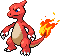

-
BULBASAUR #01

- Vegetal
- Veneno
Há uma semente de planta em suas costas desde o dia em que este Pokemon nasce, que cresce lentamente.
-
IVYSAUR #02

- Vegetal
- Veneno
Quando o bulbo em suas costas cresce, parece perder a capacidade de ficar de pé em suas patas traseiras.
-
VENUSAUR #03

- Vegetal
- Veneno
Sua planta floresce quando está absorvendo energia solar. Ele permanece em movimento para buscar a luz do sol.
-
CHARMANDER #04

- Fogo
Tem preferência por coisas quentes. Quando chove, dizem que o vapor jorra da ponta de sua cauda.
-
CHARMELEON #05
- Fogo
Tem uma natureza bárbara. Na batalha, ele chicoteia sua cauda ardente e corta com garras afiadas.
-
CHARIZARD #06

- Fogo
Ele cospe fogo que é quente o suficiente para derreter pedregulhos. Pode causar incêndios florestais soprando chamas.
-
SQUIRTLE #07

- Água
Quando ele retrai seu longo pescoço em sua concha, ele esguicha água com força vigorosa.
-
WARTORTLE #08

- Água
É reconhecido como um símbolo de longevidade. Se sua concha tem algas, esse Wartortle é muito antigo.
-
BLASTOISE #09

- Água
Ele esmaga seu inimigo sob seu corpo pesado para causar desmaios. Em uma pitada, ele se retirará dentro de sua concha.
-
CATERPIE #10

- Inseto
Para proteção, ele libera um fedor horrível da antena em sua cabeça para afastar os inimigos.